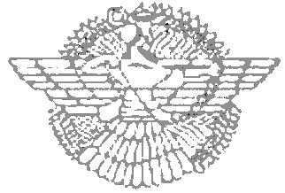

- Asyryjskie piśmiennictwo -
Asyryjskie dzieła literackie, znalezione czy to w Asyrii, czy na terenach znajdujących się pod jej wpływami, zapisywane były dialektem babilońskim, czyli w istocie były raczej wiernymi odpisami dzieł babilońskich, co potwierdzają w wielu przypadkach kolofony przy wprowadzaniu niewielkich zmian, jak podanie imienia boga asyryjskiego zamiast babilońskiego. Tak było w przypadku Enuma elisz – utworu, w którym imię babilońskiego Marduka zmieniona na asyryjskiego Aszura.
Mitologia babilońsko-asyryjska oparta jest na znaczenie starszej sumeryjskiej, teksty są liczniejsze od sumeryjskich, ale nie są bogatsze pod względem różnorodności gatunków czy treści. Ich liczba kształtuje się różnie w poszczególnych okresach historycznych.
Z okresu staroasyryjskiego (pierwsza połowa II tys. p.n.e.) – ubogiego w zabytki pisane - nie zachowały się żadne teksty mitologiczne. Zachowały się jedynie zaklęcia, które niewiele mówią o wyobrażeniach Asyryjczyków. Najliczniejsze zabytki piśmiennictwa pochodzą z okresu średnioasyryjskiego (druga połowa II tys. p.n.e.). Odnaleziono je w różnych archiwach oraz bibliotekach świątynnych i pałacowych w Mari, Nippur, Aszur i Niniwie.
Asyryjczycy nie opatrywali swoich utworów tytułami. Jego identyfikacja odbywała się na podstawie pierwszych jego wyrazów. Tytuły jakimi współcześnie się operuje nie były znane w starożytności, wyjątek stanowi Enuma elisz, które zachowało oryginalny tytuł starożytny (Enuma elisz, to pierwsze słowa eposu, które znaczą „Kiedy na górze”).
Wykorzystane źródła: